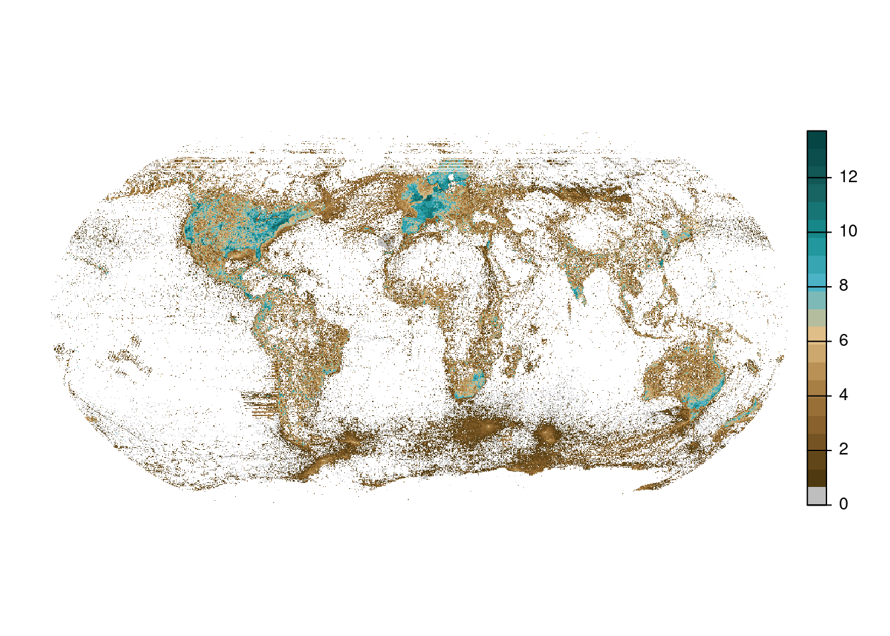
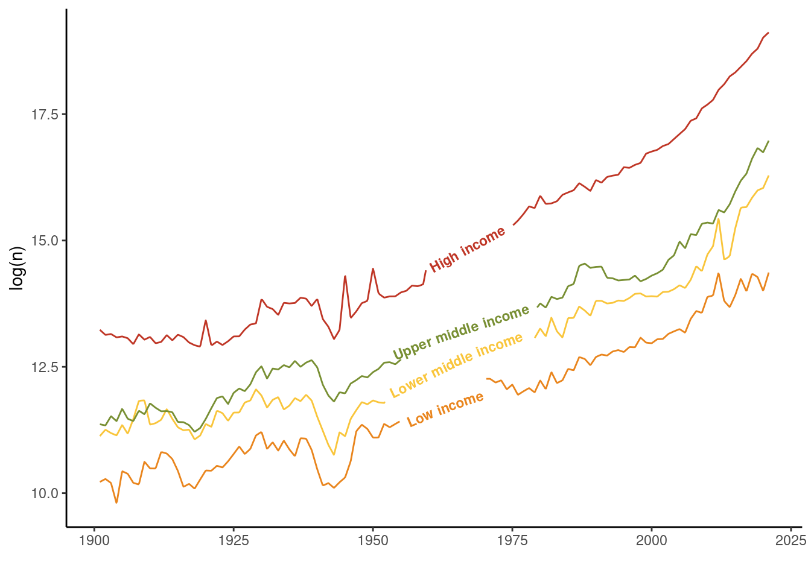
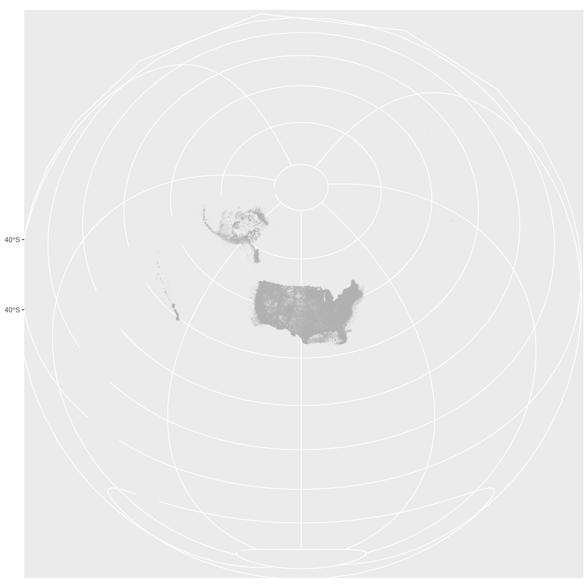
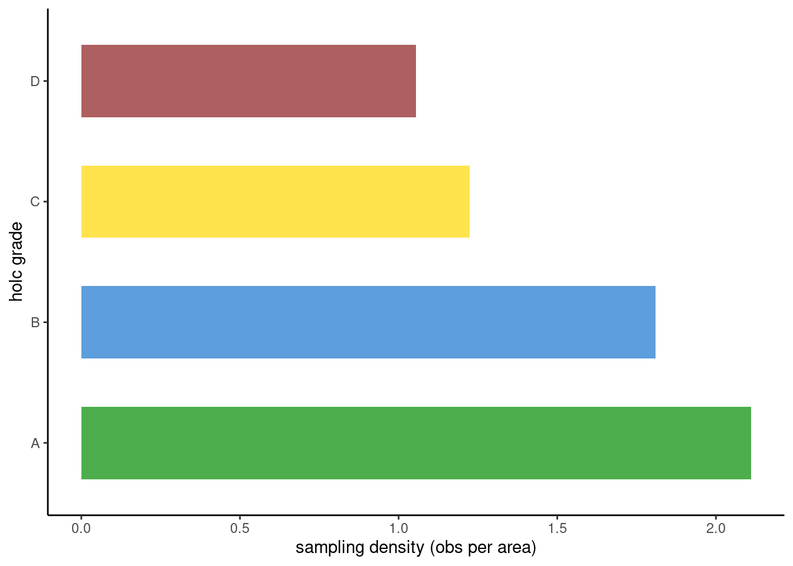
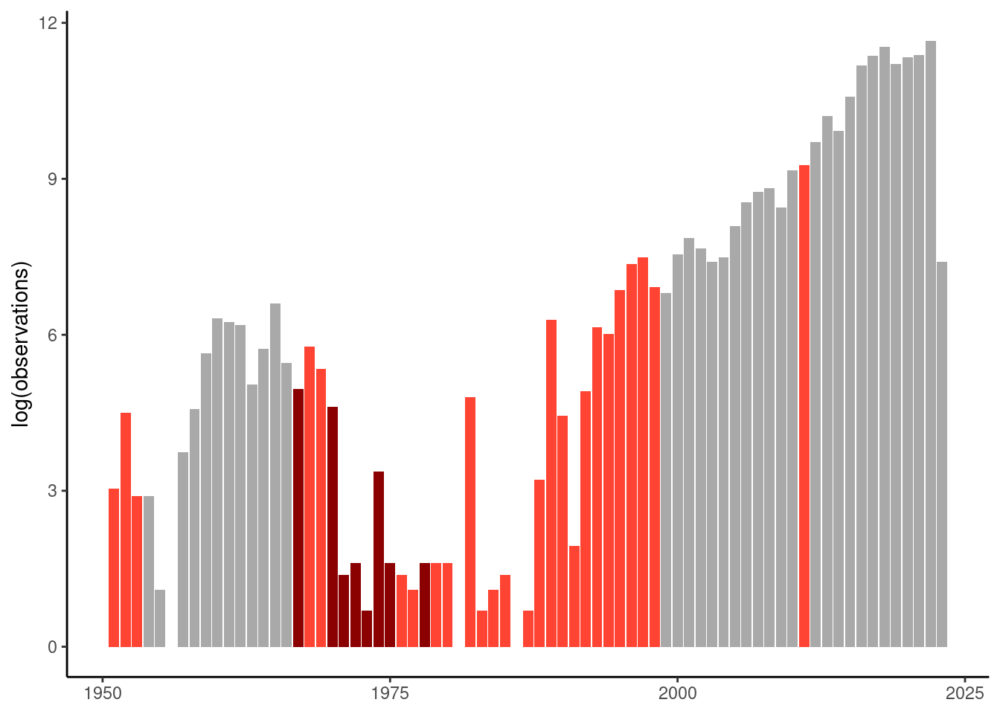
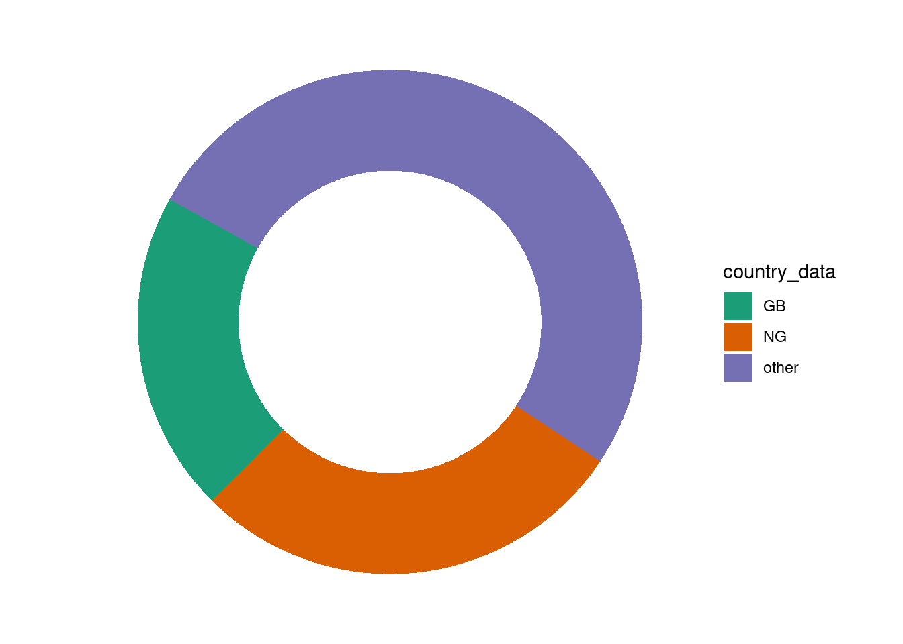
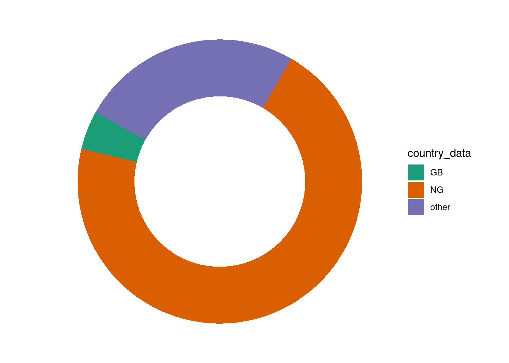

library(geomtextpath)
library(duckdbfs)
library(gbifdb)
library(tidyverse)
library(fst)
library(sf)
library(terra)
library(raster)
library(MetBrewer)
library(rnaturalearth)
library(countrycode)
library(arrow)
library(usmap)Supporting Information:
Human histories shape the biodiversity data that decide our future
While rapidly growing repositories of biodiversity data provide unprecedented insight into ecological patterns at global scales, the application of species observations often belies the reality that the species these data tell us most about is the one they were never intended to include: humans. Biodiversity data trace not only cities and roads but the rise of surveillance technology, shadows of colonial histories, and echoes of contemporary racial and economic disparities.
However, these same data are increasingly used as the starting point to inform the implementation of global policy and the investment of billions of dollars to protect and restore nature over the next decade. Effectively leveraging large-scale biodiversity data to benefit both people and nature requires expertise in social, cultural, and political processes underlying data infrastructures and their histories, just as much as it requires more data and increasingly complex statistical methods.
Here we synthesize examples of the social, political and economic dimensions of human society reflected in global biodiversity data.
In Figure 1, we leverage a the Global Biodiversity Information Facility Data to expand on the cited human dimensions of biodiversity data presented elsewhere in the literature. GBIF releases full species occurrence snapshots monthly. In this paper, we leverage the Sept 31, 2023 Snaphot (https://doi.org/10.15468/dl.ua9nww)
Reproducing Figure 1:
Connect to GBIF snapshot (Oct 2023)
We use a local version of of the Sept 31 2023 GBIF snapshot and the gbifdb package to query the database efficiently.
gbif <- gbif_local("/home/shared-data/gbif/occurrence/2023-10-01/occurrence.parquet/", backend="duckdb")However, all analysis here can be done by querying the GBIF AWS snapshot (leveraging the arrow package) with the code below.
# snapshot <- "s3://gbif-open-data-eu-central-1/occurrence/2023-10-01/occurrence.parquet"
# gbif <- open_dataset(gbif_snapshot)Panel A: Global map
df <- gbif |>
mutate(latitude = round(decimallatitude,1),
longitude = round(decimallongitude,1)) |>
filter(year >1800) |>
count(longitude, latitude) |>
collect() |>
mutate(n = log(n)) df_spatial <- df |>
filter(!is.na(latitude),
!is.na(longitude)) |>
st_as_sf(coords = c("longitude", "latitude"),
crs = "epsg:4326") |>
mutate(n = exp(n)) ras_temp <-raster(xmn=-180, xmx=180, ymn=-90, ymx=90,
resolution=c(0.1,0.1), vals=NA)
global_plot <- rasterize(df_spatial, ras_temp, field = "n", fun='sum')
# put point in raster # or use the short form "+proj=robin"
rm(df_spatial)
rm(ras_temp)crs <- "+proj=robin +lon_0=0 +x_0=0 +y_0=0 +datum=WGS84 +units=m"
global_plot <- terra::rast(global_plot)
global_plot <- global_plot * 1 # to deal with NAs in this datasaet
global_plot_rob <- terra::project(global_plot, crs, mask=TRUE)
rm(global_plot)
colors <- c("grey", met.brewer(name="Isfahan1",n=20,type="continuous"))
terra::plot(log(global_plot_rob), col = colors, axes = FALSE)
Panel B: Macroeconomic patterns
world <- ne_countries(type = "countries", scale = "medium")
world <- st_as_sf(world) |>
dplyr::select(iso_a2, income_grp) |>
st_make_valid() |>
mutate(area = st_area(geometry)) |>
as_tibble() |>
dplyr::select(-geometry) |>
mutate(area = as.numeric(area)) |>
rename(countrycode = iso_a2)country_year <- gbif |>
count(countrycode, year) |>
collect()country_year %>% filter(year >1900 & year < 2022) |>
mutate(n = replace_na(n, 0)) %>%
left_join(world) %>%
mutate(income_grp = str_sub(income_grp, 4, -1),
#INCOME_GRP = gsub("\\s", "\n", INCOME_GRP),
income_grp = gsub("\\:.*","",income_grp)) %>%
group_by(year, income_grp) %>%
summarise(n = sum(n, na.rm = TRUE)) %>% drop_na() %>%
ggplot(aes(year, log(n), color = income_grp, label = income_grp)) +
geom_textline(size = 3, fontface = 2, spacing = 30, text_smoothing = 50) +
theme_classic() +
theme(legend.position = "none", legend.title = element_blank()) +
labs(x = "") + scale_color_manual(values=met.brewer("Homer2", 4)) +
theme(legend.background = element_rect(colour = 'black', fill = 'white', linetype='solid'))
Panel C: Redlining
Redlining data
holc <- st_read("https://dsl.richmond.edu/panorama/redlining/static/fullDownload.geojson") |>
dplyr::select(state, city, holc_grade, geometry) |>
dplyr::filter(!is.na(holc_grade) & holc_grade != 'E') |>
sf::st_make_valid() Reading layer `fullDownload' from data source
`https://dsl.richmond.edu/panorama/redlining/static/fullDownload.geojson'
using driver `GeoJSON'
replacing null geometries with empty geometries
Simple feature collection with 8878 features and 7 fields (with 3 geometries empty)
Geometry type: MULTIPOLYGON
Dimension: XY
Bounding box: xmin: -122.7675 ymin: 25.70537 xmax: -70.9492 ymax: 47.72251
Geodetic CRS: WGS 84holc <- holc |>
dplyr::mutate(valid =st_is_valid(holc)) |>
dplyr::filter(valid=="TRUE")
holc_area <- holc |>
mutate(area = st_area(geometry)) |>
as_tibble() |>
dplyr::select(-geometry) |>
group_by(holc_grade) |>
summarise(area = sum(area)) |>
mutate(area = as.numeric(area)) |>
ungroup()Map of US observations
US_pts <- gbif |>
filter(countrycode == "US") |>
mutate(latitude = round(decimallatitude,3),
longitude = round(decimallongitude,3)) |>
count(latitude, longitude) |>
collect()US_pts_sf_all <- US_pts |>
filter(!is.na(latitude),
!is.na(longitude)) |>
st_as_sf(coords = c("longitude", "latitude"),
crs = st_crs(holc))
US_pts_sf <- US_pts_sf_all |> head(1000000) |>
st_transform(crs = usmap::usmap_crs())plot_gbif <- US_pts_sf |>
ggplot() +
geom_sf(aes(geometry = geometry), alpha = 0.05,
size = 0.001, color= "grey") +
theme(legend.position = "none")
plot_gbif
ggsave("../figures/plot_gbif_us.png",plot_gbif, height = 10, width = 10, dpi =300)Map of LA: observation and redlining
la <- holc |> filter(city == "Los Angeles")
ext_la <- ext(la)
pts_la <- US_pts |>
dplyr::select(longitude, latitude, n) |>
rename(lon = longitude, lat = latitude) |>
filter(lon > ext_la[1] & lon < ext_la[2] &
lat > ext_la[3] & lat < ext_la[4])
holc_la <- holc |> filter(city == "Los Angeles") |>
ggplot() +
geom_sf(aes(fill = holc_grade), alpha = 0.7, lwd = 0) +
scale_fill_manual(values=c("green4","dodgerblue3", "gold1", "firebrick4")) +
theme_void() +
geom_point(data = pts_la, aes(x = lon, y = lat), color = "grey", alpha= 0.1, size = 0.01) +
ggspatial::annotation_scale() + theme(legend.position = "none")
ggsave("../figures/plot_gbif_holcLA.png",holc_la, height = 5, width = 5, dpi =300)Redlining observations summary
holc_obs <- st_join(US_pts_sf_all, holc, join = st_within)
holc_obs |> drop_na() |> filter(state=="CA")Simple feature collection with 57851 features and 5 fields
Geometry type: POINT
Dimension: XY
Bounding box: xmin: -122.51 ymin: 32.665 xmax: -117.021 ymax: 38.619
Geodetic CRS: WGS 84
# A tibble: 57,851 × 6
n geometry state city holc_grade valid
* <dbl> <POINT [°]> <chr> <chr> <chr> <lgl>
1 5159 (-118.455 33.966) CA Los Angeles D TRUE
2 742 (-121.509 38.554) CA Sacramento C TRUE
3 1814 (-118.532 34.043) CA Los Angeles B TRUE
4 19 (-118.266 33.993) CA Los Angeles D TRUE
5 3 (-122.499 37.736) CA San Francisco B TRUE
6 26 (-118.223 34.195) CA Los Angeles B TRUE
7 1 (-118.26 34.085) CA Los Angeles C TRUE
8 15 (-122.295 37.812) CA Oakland D TRUE
9 11 (-122.494 37.734) CA San Francisco B TRUE
10 73 (-122.266 37.888) CA Oakland B TRUE
# ℹ 57,841 more rowsredlining <- as_tibble(holc_obs) %>% drop_na() %>%
group_by(holc_grade) %>%
summarise(counts = sum(n)) %>% ungroup() %>%
left_join(holc_area) %>%
mutate(density = counts/area) %>%
ggplot(aes(x = holc_grade, y = density*1000, fill = holc_grade)) +
scale_fill_manual(values=c("green4","dodgerblue3", "gold1", "firebrick4")) +
geom_col(width = 0.6, alpha = 0.7) + theme_classic() + theme(legend.position = "none") +
labs(x = "holc grade", y = "sampling density (obs per area)") + coord_flip() #+
#facet_wrap(~basisofrecord, scales = "free")
redlining
ggsave("../figures/holc-summary.png", redlining, height = 3, width = 3.5, dpi = 300)Panel D: Conflict
country_year <- gbif |>
count(countrycode, year) |>
collect()#download.file(url = "https://ucdp.uu.se/downloads/ucdpprio/ucdp-prio-acd-231-rds.zip", destfile = "data/conflict.zip")
#unzip("data/conflict.zip", exdir = "data/")
conflict <- readRDS("../data/UcdpPrioConflict_v23_1.rds") |>
dplyr::select(location, year, intensity_level) |>
separate_rows(location, sep = ",") |>
mutate(countrycode = countrycode(location, origin = 'country.name', destination = 'iso2c'))conflict <- country_year %>%
left_join(conflict) %>%
dplyr::select(-location) %>%
filter(year >1950) %>%
mutate(intensity_level = replace_na(intensity_level, 0)) %>%
mutate(n = replace_na(n, 0)) %>%
filter(countrycode == "KH") %>%
group_by(countrycode, year) |>
summarise(intensity_level = max(intensity_level),
n = mean(n, na.rm = TRUE)) |>
unique() %>%
ggplot() +
geom_col(aes(year, (log(n)), fill = as.factor(intensity_level))) +
scale_fill_manual(values= c("darkgrey", "#FF4433", "darkred")) +
#scale_fill_manual(values=met.brewer("Renoir", 4)) +
#geom_line(aes(year, v2xcl_dmove*10), lwd = 1.5, color = "black") +
theme_classic() + theme(legend.position = "none", axis.title.x = element_blank()) +
scale_y_continuous(
# Features of the first axis
name = "log(observations)"#,
# Add a second axis and specify its features
#sec.axis = sec_axis( trans=~./10, name="freedom of movement")
) #+ geom_line(aes(x = year, y = intensity_level*5)) +
conflict
ggsave("../figures/war-cambodia.png",conflict, width = 6, height = 3, dpi = 300)Panel E: Colonialism
#download.file("https://geonode.wfp.org/geoserver/wfs?format_options=charset:UTF-8&typename=geonode:khm_adm1_un&outputFormat=SHAPE-ZIP&version=1.0.0&service=WFS&request=GetFeature", destfile = "../data/cambodia.zip")
#unzip("../data/cambodia.zip", "../data/")
#cambodia <- st_read("../data/khm_adm1_un.shp")NG_year <- gbif |>
filter(countrycode == "NG") |>
count(year, basisofrecord, datasetkey) |>
collect()
orgs <- read_tsv("https://api.gbif.org/v1/dataset/search/export?format=TSV&") |>
dplyr::select(publishing_country, dataset_key, title) |>
rename(datasetkey = dataset_key)
NG_year_summary <- NG_year |>
left_join(orgs) |>
mutate() |>
mutate(country_data = ifelse(publishing_country == "GB", "GB",
ifelse(publishing_country == "NG", "NG", "other"))) |>
mutate(precol = ifelse(year <1961,"1","2")) |>
group_by(country_data, precol) |>
summarise(n = sum(n)) |>
drop_na()t1 <- NG_year_summary |>
group_by(precol) |> mutate(total_obs = sum(n)) |> ungroup()|>
mutate(perc_obs = n/total_obs) |> filter(precol == "1") |>
arrange(desc(perc_obs)) %>%
mutate(lab.pos = cumsum(perc_obs)-.5*perc_obs)
ggplot(data = t1,
aes(x = 2, y = perc_obs, fill = country_data))+
geom_bar(stat = "identity")+
coord_polar("y", start = 200) +
#geom_text(aes(y = lab.pos, label = paste(perc_obs,"%", sep = "")), col = "white") +
theme_void() +
scale_fill_brewer(palette = "Dark2") + xlim(.2,2.5)
t2 <- NG_year_summary |>
group_by(precol) |> mutate(total_obs = sum(n)) |> ungroup()|>
mutate(perc_obs = n/total_obs) |> filter(precol == "2") |>
arrange(desc(perc_obs)) %>%
mutate(lab.pos = cumsum(perc_obs)-.5*perc_obs)
ggplot(data = t2,
aes(x = 2, y = perc_obs, fill = country_data))+
geom_bar(stat = "identity")+
coord_polar("y", start = 200) +
#geom_text(aes(y = lab.pos, label = paste(perc_obs,"%", sep = "")), col = "white") +
theme_void() +
scale_fill_brewer(palette = "Dark2") + xlim(.2,2.5)